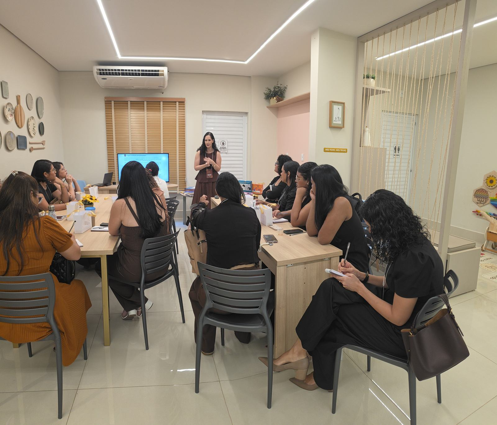

Oficina presencial · Continuação de Raízes da Avaliação
Onde o raciocínio clínico vira plano
O laudo não encerra o processo. Ele abre o próximo. Um dia inteiro para transformar resultados de avaliação em um plano interventivo defensável, monitorável e replicável na sua clínica.

Blocos teóricos curtos e prática longa. Cada bloco entrega uma peça do plano interventivo. Ao fim do dia, você sai com um PDI construído por você, do início ao fim.
Credenciamento, entrega do kit e contrato de aprendizagem do dia.
Etapas 1 e 2: ler o laudo como mapa clínico e converter achados em objetivos operacionais.
Café, frutas e conversa entre colegas.
Etapas 3 e 4: arquitetura do plano e seleção de estratégias com sustentação científica.
Etapa 3 na mão: em duplas, você recebe um laudo completo e constrói o PDI do caso.
Segundo intervalo do dia.
Etapas 5 e 6: estrutura da sessão, materiais reais do consultório e registro de progresso.
Etapa 7: quando manter, ajustar ou encerrar a intervenção. Dúvidas abertas e entrega dos certificados.
Intervenção não começa na atividade. Começa na decisão clínica. Esta é a sequência que sustenta um plano que você consegue defender diante da família, da escola e de si mesma.
O laudo descreve o que a criança faz. A leitura clínica explica por que ela faz assim. Antes de qualquer plano, é preciso separar sintoma de causa funcional.
"Melhorar a leitura" não é objetivo. É desejo. Objetivo terapêutico é comportamento observável, com critério de domínio e prazo definido.
O PDI é a ponte entre a avaliação e a sessão. É também o registro que demonstra que a sua conduta tem racional clínico, e não improviso.
Existe atividade bonita que não move nada. O critério de escolha não é o engajamento imediato: é a correspondência entre a estratégia e o processo cognitivo que se quer desenvolver.
Uma sessão sem estrutura vira recreação assistida. A estrutura não engessa o vínculo: é ela que libera a profissional para observar.
Sem dado de progresso, a decisão clínica vira impressão. O monitoramento contínuo é o que permite corrigir a rota antes de perder seis meses de trabalho.
Toda intervenção precisa de um ponto de decisão previsto desde o início. Encerrar bem é tão técnico quanto começar bem.
Tudo o que for usado no dia fica disponível aqui, organizado por etapa. Os links são liberados progressivamente ao longo da oficina.
Guia passo a passo para extrair hipóteses funcionais de um relatório de avaliação.
Disponível no dia da oficinaObjetivos operacionais por área de habilidade, com critério de domínio sugerido.
Disponível no dia da oficinaDocumento completo, formatado e pronto para personalizar com a sua identidade.
Disponível no dia da oficinaLaudo completo do caso trabalhado em dupla no bloco prático da tarde.
Disponível no dia da oficinaQual estratégia para qual processo cognitivo, com a referência científica de cada escolha.
Disponível no dia da oficinaEstrutura de sessão e checklist de condução para aplicar imediatamente.
Disponível no dia da oficinaComo registrar a sessão e ler a curva de progresso do caso ao longo do tempo.
Disponível no dia da oficinaModelo de relatório de processo e roteiro de devolutiva para família e escola.
Disponível no dia da oficinaO intervalo do almoço é de 1h20, das 11h40 às 13h. As sugestões abaixo serão atualizadas assim que o local for confirmado, com distância e tempo de deslocamento a pé.
Estamos finalizando a seleção de restaurantes próximos ao local da oficina. Esta seção será preenchida com opções por tipo de cozinha, distância, horário de funcionamento aos domingos e link direto para o mapa. Volte a esta página na semana do evento.
Atenção: muitos restaurantes de Porto Velho têm horário reduzido aos domingos. As sugestões listadas aqui serão apenas de casas com funcionamento confirmado no dia.
Sua avaliação é o que sustenta a próxima edição. Leva menos de um minuto e vai direto para o WhatsApp da Ariana.
Ficou uma dúvida sobre alguma etapa? Envie antes, durante ou depois da oficina. As perguntas mais recorrentes são respondidas no hotseat do encerramento.
A turma é reduzida por decisão pedagógica e a oficina acontece uma única vez, em 18 de outubro. Não haverá segunda turma.
Falar com a Ariana